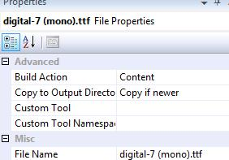

Basic Screen saver in WPF
Actually I wrote this some time ago (Dec 2009 apparently) and it has languished ever since.
Now I have to admit I never set out to build this, I was basically procrastinating from doing some real work... That said it was kinda fun and very quick.
There is nothing special, difficult or obtuse in building a windows screensaver, basically you simply build a normal executable then change the extension from .exe to .scr. Basically.
What I wanted was a simple digital clock display, like so:
Nice. Guess what time I wrote this. This is just a simple WPF application, the XAML being:
<Window x:Class="WPFScreensaver.Window1"
xmlns="http://schemas.microsoft.com/winfx/2006/xaml/presentation"
xmlns:x="http://schemas.microsoft.com/winfx/2006/xaml"
Title="Window1" Background="Black" ResizeMode="NoResize"
ShowInTaskbar="False" WindowStyle="None" WindowStartupLocation="CenterScreen" WindowState="Maximized">
<Window.Resources>
<Style TargetType="{x:Type Label}">
<Setter Property="Foreground" Value="White"/>
<Setter Property="FontSize" Value="180"/>
<Setter Property="FontFamily" Value="./#Digital-7 mono"/>
</Style>
</Window.Resources>
<Grid HorizontalAlignment="Center" VerticalAlignment="Center">
<Label x:Name="timeText" >
<Label.Effect>
<DropShadowEffect ShadowDepth="0" Color="GreenYellow" BlurRadius="20" />
</Label.Effect>
</Label>
</Grid>
</Window>
Note the settings to hide all the chrome and startup the app maximised. Also the sweet “glow” effect using the hardware accelerated DropShadowEffect. In the code behind we just have a timer that updates the Label content every second with the current time. No problem.
private Timer _timer = new Timer(1000);
public Window1()
{
InitializeComponent();
SetTime();
_timer.Elapsed += new ElapsedEventHandler(Timer_Elapsed);
_timer.Start();
this.MouseMove += new MouseEventHandler(Window1_MouseMove);
this.KeyDown += new KeyEventHandler(Window1_KeyDown);
}
private void SetTime()
{
timeText.Content = DateTime.Now.ToLongTimeString();
}
private void Timer_Elapsed(object sender, ElapsedEventArgs e)
{
this.Dispatcher.Invoke(new Action(SetTime));
}
I did want a nice monospace digital font, and preferably free and legit. A quick google search yielded up the Digital-7 Mono font
Embedding a font for use in WPF is a matter of including the ttf file in the application with a build action of content and copied to the bin.

To consume the font we just use the URI: FontFamily=”./#Digital-7 mono”. All done.
When Windows is calling the screensaver it passes one of three command line parameters to the executable.
- /c Configuration mode – when you push the settings button in the screensaver dialog this is the parameter that is passed. You could write the settings out as XML, or leverage .NET user settings API.
- /p Preview mode
- /s Full-screen mode – this is how Windows will invoke the screen saver “normally”.
This explains it more fully and better than I.
In the app.xaml.cs of the executable:
protected override void OnStartup(StartupEventArgs e)
{
base.OnStartup(e);
string[] args = e.Args;
if (args.Length > 0)
{
string arg = args[0].ToLower(CultureInfo.InvariantCulture).Trim().Substring(0, 2);
switch (arg)
{
case "/c":
MessageBox.Show("This screensaver has no options you can configure.",
"Screensaver", MessageBoxButton.OK, MessageBoxImage.Information);
Application.Current.Shutdown();
break;
// and so on
And so on... I stole this code from here
At this point you can just new up your main window and go. You will need to handle MouseMove and KeyDown events for the window so you can dismiss the application appropriately. And be aware that a Timer will raise events on a non-UI thread, so you will need to dispatch any UI events back to the UI thread.
MouseMove is a slight problem, previewing will usually result in the user also immediately dismissing the screensaver. Other implementations I have seen also test if the mouse has moved significantly, by stashing the current mouse position and comparing it next time the event is raised. However, this will be sufficient:
bool _isActive;
private void Window1_MouseMove(object sender, MouseEventArgs e)
{
if (!_isActive)
{
_isActive = true;
}
else
{
Application.Current.Shutdown();
}
}
Now just build and change the .exe extension. On my Windows 7 machine I can right click and “Install” the screensaver and I’m pretty sure you can do that on Vista and probably XP as well. Otherwise you may need to copy the .scr and and font file to the %windows%\system32 folder.